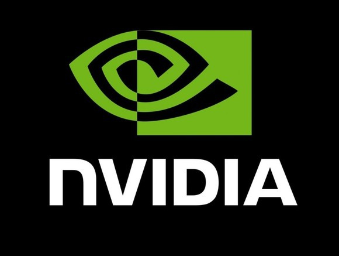

| # | Team Name | Affiliation | Score |
|---|---|---|---|
| 1 | Yingwei.Pan | JD AI Research, CV Lab | 76.0 [slides] [tech report] |
| 2 | denemmy | 71.6 [slides] [tech report] | |
| 3 | numpee | 69.6 [slides] [tech report] |
| # | Team Name | Affiliation | Score |
|---|---|---|---|
| 1 | lunit | 72.0 [slides] [tech report] | |
| 2 | Yingwei.Pan | JD AI Research, CV Lab | 71.4 [slides] [tech report] |
| 3 | denemmy | 71.3 [slides] [tech report] |
Overview
We are pleased to announce the 2019 Visual Domain Adaptation (VisDA2019) Challenge! It is well known that the success of machine learning methods on visual recognition tasks is highly dependent on access to large labeled datasets. Unfortunately, performance often drops significantly when the model is presented with data from a new deployment domain which it did not see in training, a problem known as dataset shift. The VisDA challenge aims to test domain adaptation methods’ ability to transfer source knowledge and adapt it to novel target domains.
The competition will take place during the months of June -- September 2019, and the top performing teams will be invited to present their results at the workshop at ICCV 2019 in Seoul, South Korea. This year’s challenge includes two tracks:
- Multi-Source Domain Adaptation
- Semi-Supervised Domain Adaptation
on a new [DomainNet dataset]. Participants are welcome to enter in one or both tracks.


Sponsors
Prizes
The top three teams in each track will receive prizes:
- 1st place: NVIDIA GeForce RTX 2080 Ti GPU
- 2nd place: USD 500 Amazon Gift Card
- 3rd place: USD 250 Amazon Gift Card
Evaluation
We will use CodaLab to evaluate submissions and maintain a leaderboard. To register for the evaluation server, please create an account on CodaLab and and enter as a participant in one of the following competitions:
If you are working as a team, you have the option to register for one account for your team or register multiple accounts under the same team name. If you choose to use one account, please indicate the names of all of the members on your team. This can be modified in the “User Settings” tab. If your team registers for multiple accounts, please do so using the protocol explained by CodaLab here. Regardless of whether you register for one or multiple accounts, your team must adhere to the per-team submission limits (20 entries per day per team during the validation phase).
Please refer to the instructions in the DevKit ReadMe file for specific details on submission formatting and evaluation for the classification and segmentation challenges.
Rules
The VisDA challenge tests adaptation and model transfer, so the rules are different than most challenges. Please read them carefully.
Supervised Training: Teams may only submit test results of models trained on the source domain data. To ensure equal comparison, we also do not allow any other external training data, modifying the provided training dataset, or any form of manual data labeling.
Unsupervised training: Models can be adapted (trained) on the test data in an unsupervised way, i.e. without labels.
Source Models: The performance of a domain adaptation algorithm greatly depends on the baseline performance of the model trained only on source data. We ask that teams submit two sets of results: 1) predictions obtained only with the source-trained model, and 2) predictions obtained with the adapted model. See the development kit for submission formatting details.
Leaderboard:The main leaderboard for each competition track will show results of adapted models and will be used to determine the final team ranks. The expanded leaderboard will additionally show the team's source-only models, i.e. those trained only on the source domain without any adaptation. These results are useful for estimating how much the method improves upon its source-only model, but will not be used to determine team ranks.
Rank:The final rank will be determined by the overall accuracy on clipart and painting domain. You can train two separate models for clipart and painting.
FAQ
- What's the training setting for unsupervised multi-source domain adaptation?
- Can we train models on data other than the source domain?
- In unsupervised multi-source domain adaptation challenge, can we use testing split of the given data to tune the parameter?
- Can we assign pseudo labels to the unlabeled data in the target domain?
- Do we have to use the provided baseline models?
- How many submissions can each team submit per competition track?
- Can multiple teams enter from the same research group?
- Can external data be used?
- Are challenge participants required to reveal all details of their methods?
- Do participants need to adhere to TASK-CV abstract submission deadlines to participate in the challenge?
Ideally, you should train two identical models with the same strategy/approach/hyperparameter on following settings:
Model I: Train on labeled images in sketch_train.txt (#49,115) /real_train.txt (#122,563) /quickdraw_train.txt (#120,750) /infograph_train.txt (#37,087) + unlabeled images in clipart_train.txt (#34,019), Test on unlabeled images in clipart_test.txt (#14,814).
Model II: Train on labeled images in sketch_train.txt (#49,115) /real_train.txt (#122,563) /quickdraw_train.txt (#120,750) /infograph_train.txt (#37,087) + unlabeled images in painting_train.txt (#52,867), Test on unlabeled images in painting_test.txt (#22,892).
The submission file should contain the predictions of model I on 14,814 testing images and the predictions of model II on 22,892 testing images. The final ranking will be determined by how many correct predictions do the submission file have within the (14,814+22,892) images. One submission example can be found with the following link: submission_example.txt
Participants may elect to pre-train their models only on ImageNet. Please refer to the challenge evaluation instructions found in the DevKit for more details.
No, in the training phase, only the training split can be used to train the model. In other words, utilizing the testing split from the source domains or target domain is prohibited.
Yes, assigning pseudo labels is allowed as long as no human labeling is involved.
No, these are provided for your convenience and are optional.
For the validation domain, the number of submissions per team is limited to 20 upload per day and there are no restrictions on total number of submissions. For the test domain, the number of submissions per team is limited to 1 upload per day and 20 uploads in total. Only one account per team must be used to submit results. Do not create multiple accounts for a single project to circumvent this limit, as this will result in disqualification.
Yes, so long as each team is comprised of different members.
The allowed training data consists of the VisDA 2019 Training set. Optional initialization of models with weights pre-trained on ImageNet is allowed and must be declared in the submission. Please see the challenge rules for more details.
Yes! The top performing teams are required to include a four+ page write-up regarding their methods and code to reproduce their results to the claim the victory. The detailed procedure for releasing the code is to be determined.
Submission of a TASK-CV workshop abstract is not mandatory to participate in the challenge; however, we request that any teams that wish to be considered for prizes or receive invitation to speak at the workshop submit a 4-page abstract. The top-performing teams that submit abstracts will be invited to present their approaches at the workshop.